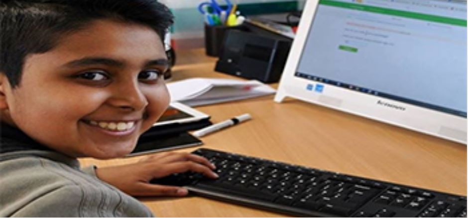

Primary KS2 (school years 5 and 6)
KS3 (school years 7, 8 and 9)
KS4 (school years 10 and 11)

Maths
English
Science
Maths
English
Science
What kind of student needs the services of Our Tuition Centre?
Children come to our Tuition Centre for a variety of reasons, whether it be to improve a grade or receive further extension andchallenges. Each situation is different and that is why our bespoke, individual learning programmes are specifically created to make sure those needs are met.
A typical student may come for the following reasons:-
Primary or High School students who are having difficulty in elements of English such as reading, writing or spelling
Students who are having difficulty in mathematics
Students who want to prepare for entry tests and 11+
GCSE and SAT exam students in Maths, English, Science and Languages
Students who are aiming for A*/9 grades
Students who need help in A-level Chemistry, Biology, Mathematics and English